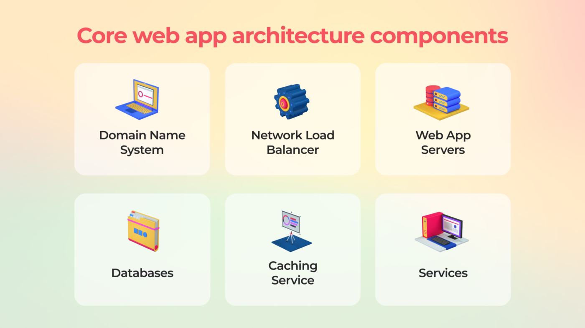
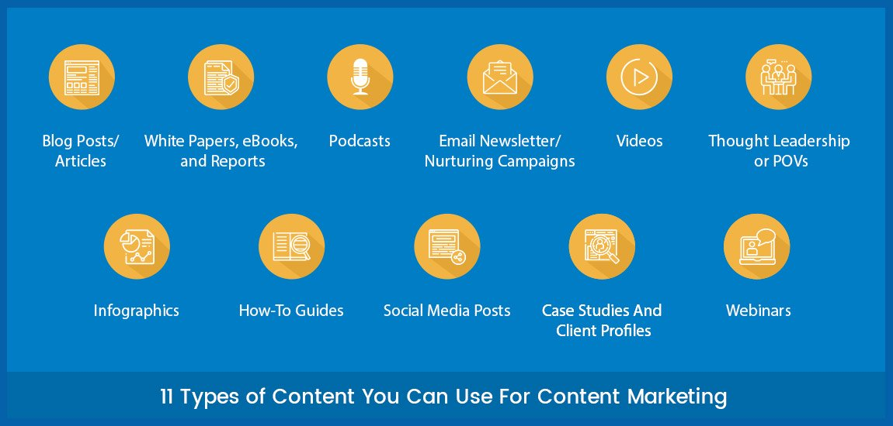

Client/Server Concepts
Client-server denotes a relationship between cooperating programs in an application, composed of clients initiating requests for services and servers providing that function or service.

The client-server model, or client-server architecture, is a distributed application framework dividing tasks between servers and clients, which either reside in the same system or communicate through a computer network or the Internet. The client relies on sending a request to another program in order to access a service made available by a server. The server runs one or more programs that share resources with and distribute work among clients.
The client server relationship communicates in a request–response messaging pattern and must adhere to a common communications protocol, which formally defines the rules, language, and dialog patterns to be used. Client-server communication typically adheres to the TCP/IP protocol suite.
TCP protocol maintains a connection until the client and server have completed the message exchange. TCP protocol determines the best way to distribute application data into packets that networks can deliver, transfers packets to and receives packets from the network, and manages flow control and retransmission of dropped or garbled packets. IP is a connectionless protocol in which each packet traveling through the Internet is an independent unit of data unrelated to any other data units.
Client requests are organized and prioritized in a scheduling system, which helps servers cope in the instance of receiving requests from many distinct clients in a short space of time. The client-server approach enables any general-purpose computer to expand its capabilities by utilizing the shared resources of other hosts. Popular client-server applications include email, the World Wide Web, and network printing.
Components of Web Application
All web-based database applications have three primary components: A web browser (or client), a web application server, and a database server.

Web-based database applications rely on a database server, which provides the data for the application. The database server sometimes also provides business logic in the form of stored procedures. Stored procedures can offer significant performance advantages, especially in a multi-tiered architecture. In addition to database servers, other enterprise information system components include IMS databases, IBM® MQ messages, and CICS® records.
The clients handle the presentation logic, which controls the way in which users interact with the application. In some cases, the client validates user-provided input. Web applications sometimes integrate Java™ applets into the client-side logic to improve the presentation layer.
Types of Web Content
here are 3 types of online content: content that 'persuades', content that 'sells' and content that 'reassures'.Web content refers to the textual, aural, or visual content published on a website.

T Content means any creative element, for example, text, applications, images, archived e-mail messages, data, e-services, audio and video files, and so on.Web content may include webpage document pages, information, software data and applications, e-services, images, audio and video files, personal Web pages.
Generation of dynamic web page
Web pages that use server-side scripting are often created with the help of server-side languages such as PHP, Perl, ASP, ASP.NET, JSP, ColdFusion and other languages. These server-side languages typically use the Common Gateway Interface (CGI) to produce dynamic web pages.

A dynamic page displays different content for different users while retaining the same layout and design. Such pages, usually written in CGI, AJAX, ASP or ASP.NET, take more time to load than simple static pages. They’re frequently implemented to show information that changes frequently, e.g., weather updates or stock prices. Dynamic pages usually contain application programs for different services and require server-side resources like databases. A database allows the page creator to separate the website’s design from the content to be displayed to users. Once they upload content into the database, it is retrieved by the website in response to a user request.
Application Servers
An application server is a modern form of platform middleware. It is system software that resides between the operating system (OS) on one side, the external resources (such as a database management system [DBMS], communications and Internet services) on another side and the users' applications on the third side.Application Servers example are JBoss , Glassfish.Application server contains Web and EJB containers.

It can be used for servlet, jsp, struts, jsf, ejb etc. It is a component based product that lies in the middle-tier of a server centric architecture. It provides the middleware services for state maintenance and security, along with persistence and data access.An application server typically can deliver web content too, but its primary job is to enable interaction between end-user clients and server-side application code—the code representing what is often called business logic—to generate and deliver dynamic content, such as transaction results, decision support, or real.